Anthropic vient de lancer Claude Sonate 5.5 et il bat déjà le plus puissant Opus 5.5 sur certains benchmarks. Et il est moins cher et plus rapide. Donc oui, c'est un événement assez important. Dans cette vidéo, je vais vous montrer tout ce que vous devez savoir sur Sonate 5.5, comment il se compare réellement à Opus 5.5, et pourquoi c'est important si vous utilisez l'IA pour la recherche, l'automatisation, ou pour créer des outils de trading.
Interface & Outils : Site web officiel d'Anthropic (page de présentation de Claude Sonnet 5.5, tableaux et graphiques de benchmarks de performance).
Contenu textuel & Code : Scores et métriques de performance sur des benchmarks (Terminal-Bench 4.0, FrontierCode 1.1, CursorBench 4.0, GDPval-AA v2.1, OSWorld 2.1) et courbes de coût par tâche en USD (log scale).
Action / Démonstration : Présentation et analyse comparative des performances et des coûts des différents modèles d'intelligence artificielle d'Anthropic.
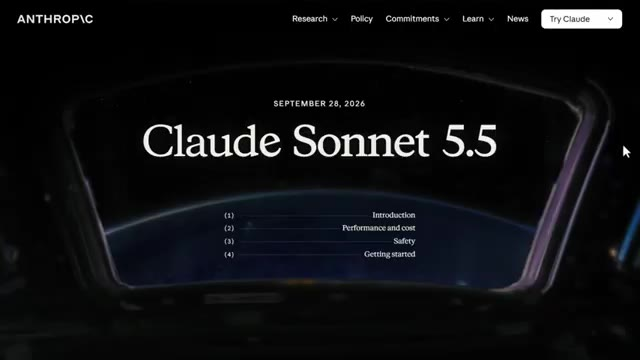
🔍 Agrandir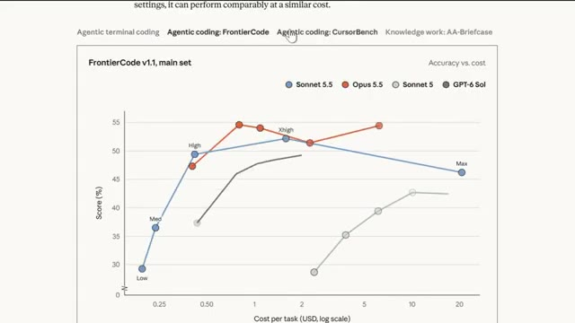
🔍 AgrandirIl y a en fait un résultat de test de référence ici qui m'a vraiment surpris. Et je vous montrerai ça dans quelques minutes. Mais d'abord, commençons par ce qui est réellement nouveau. Donc Sonnet 5.5 est le deuxième modèle de la famille Claude 5.5, juste après Opus 5.5. Anthropic positionne celui-ci comme le modèle de tous les jours.
Interface & Outils : Navigateur web affichant un graphique de benchmark de performance et le réseau social X.
Contenu textuel & Code : Courbes de performance (Elo vs coût par tâche) comparant Sonnet 5.5, Opus 5.5, Sonnet 5 et GPT-6 Sol ; tweet d'annonce de Claude 5.5.
Action / Démonstration : Présentation des résultats de benchmarks et consultation du fil d'actualité concernant le lancement du modèle.
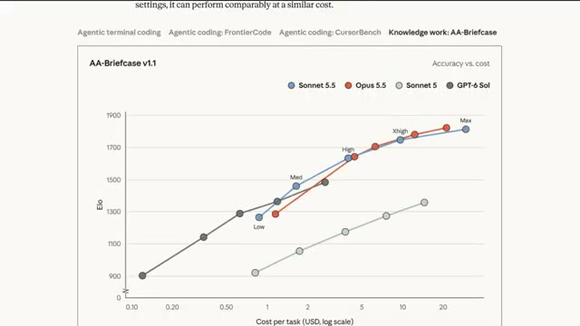
🔍 Agrandir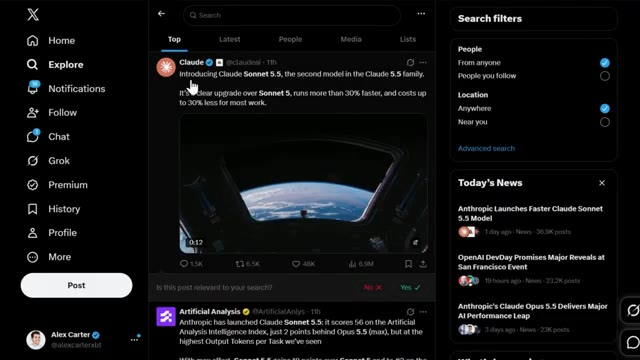
🔍 AgrandirOpus 5.5 gère le travail complexe qui demande beaucoup de jugement. Et Sonnet 5.5 est conçu pour les tâches bien définies, la correction de bugs, et la création de documents, diaporamas et feuilles de calcul soignés. C'est vraiment un coup fort dans la gamme ici, parce que maintenant vous avez une option moins chère qui ne donne pas l'impression d'être une rétrogradation. Voici le résumé. Il tourne plus de 30 % plus vite que Sonnet 5 et il coûte jusqu'à 30 % moins cher pour la plupart des tâches.
Interface & Outils : Page web de documentation ou d'annonce officielle.
Contenu textuel & Code : Texte descriptif introduisant Claude Sonnet 5.5, détaillant ses performances (70.6% sur Terminal-Bench 4.0) et sa complémentarité avec Claude Opus 5.5.
Action / Démonstration : Le curseur ou la sélection met en valeur les points clés des capacités du modèle pour l'audience.
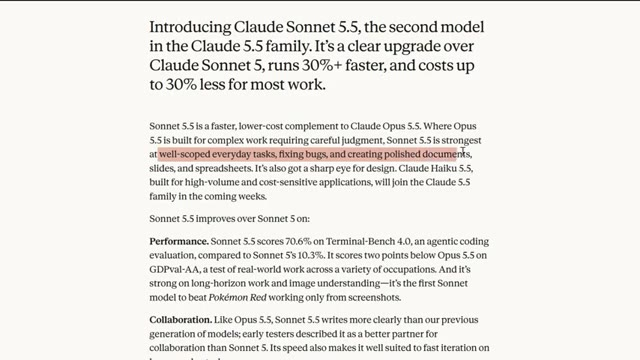
🔍 AgrandirC'est un saut assez agressif. Et je pense vraiment qu'il s'agit d'Anthropic essayant de garder une longueur d'avance avant les propres annonces d'OpenAI. Mais nous aborderons l'angle concurrentiel un peu plus tard. Première chose, regardons les chiffres parce que c'est là que ça devient intéressant. Sur Terminal Bench 4.0, qui est une évaluation du codage agentique, Sonnet 5,5 obtient un score de 70,6 %.
Interface & Outils : Site web de benchmarks et page d'annonces OpenAI DevDay.
Contenu textuel & Code : Tableau de métriques comparatives incluant des scores en pourcentage et en points (Terminal-Bench 4.0, FrontierCode 1.1, CursorBench 4.0, GDPval-AA v2.1, OSWorld 2.1).
Action / Démonstration : Présentation des chiffres et des performances comparées des modèles concurrents.
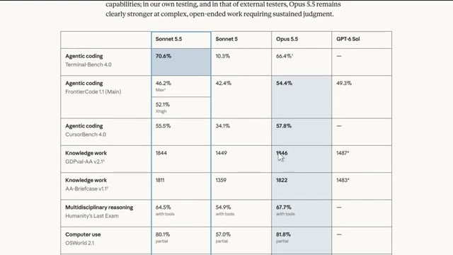
🔍 AgrandirComparez cela au Sonnet 5, qui se situait à seulement 10,3 %. Ce n'est pas un petit bond. C'est un bond massif. Maintenant, voici la partie surprenante. Opus 5.5 obtient un score de 66,4 % sur ce même étalon de mesure à son réglage d'effort le plus élevé. Donc, sur ce test spécifique, le Sonnet 5.5, le modèle le moins cher, surpasse en réalité l'Opus 5.5. Je ne m'attendais vraiment pas à cela quand je l'ai vu pour la première fois. Mais avant de vous emballer trop, ce n'est qu'un étalon de mesure. Sur Frontier Code 1.1, le Sonnet 5.5 obtient 46,2 %,
Interface & Outils : Document textuel / tableau de benchmarks de performance.
Contenu textuel & Code : Scores chiffrés : Sonnet 5.5 (70.6% sur Terminal-Bench 4.0), Sonnet 5 (10.3%), Opus 5.5 (66.4%).
Action / Démonstration : Présentation des résultats comparatifs des différents modèles d'IA.
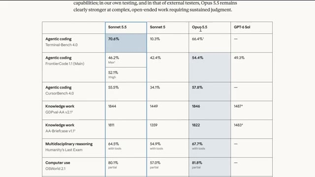
🔍 Agrandirpendant qu'Opus 5.5 se situe à 54,4 %. Et sur le GDP Val AA, qui évalue le travail du monde réel à travers 44 professions, Sonnet 5.5 arrive à seulement deux points derrière Opus 5.5, avec 1 844 contre 1 846.
Interface & Outils : Document de benchmark ou rapport d'évaluation technique affiché à l'écran.
Contenu textuel & Code : Tableau de données montrant des scores de performance en pourcentage et en points (ex. FrontierCode 1.1 à 54,4 % pour Opus 5.5, GDPval-AA v2.1 à 1844 pour Sonnet 5.5 et 1846 pour Opus 5.5).
Action / Démonstration : Présentation visuelle et comparaison des résultats de performance des modèles d'intelligence artificielle.
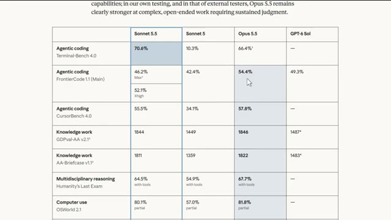
🔍 AgrandirAlors ouais, dans la plupart des domaines, Opus reste le modèle globalement le plus puissant, mais Sonnet 5.5 comble l'écart d'une manière qui compte vraiment pour les utilisateurs soucieux de leur budget. Ensuite, parlons codage, car c'est là qu'une grande partie de l'amélioration se voit vraiment. Sur CursorBench 4.0, qui teste de vraies sessions de codage, Sonnet 5.5 obtient un score de 55,5 %, ce qui se trouve à environ deux points des 57,8 % d'Opus 5.5.
Interface & Outils : Interface web de présentation des benchmarks d'intelligence artificielle (type Anthropic/Claude).
Contenu textuel & Code : Tableau de métriques avec des scores sur des benchmarks tels que Agentic coding (FrontierCode 1.1, CursorBench 4.0), Knowledge work, Multidisciplinary reasoning, Computer use et Visual chart recognition. Les valeurs affichées incluent des pourcentages et des scores numériques (ex: Sonnet 5.5 à 46.2%, 55.5%, 1844, etc.).
Action / Démonstration : Présentation comparative des performances des modèles d'IA pour illustrer les progrès de Sonnet 5.5 par rapport à Opus 5.5.
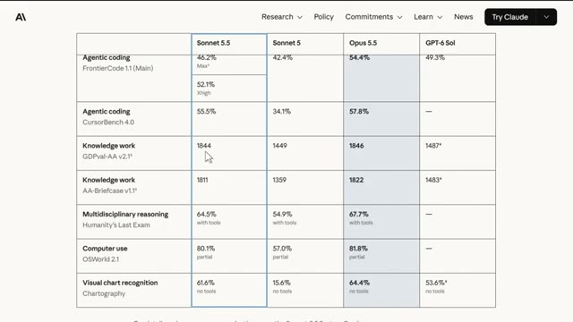
🔍 AgrandirLes premiers testeurs ont noté qu'il comprend les bases de code plus rapidement et groupe les appels d'outils plus efficacement que Sonnet 5, ce qui signifie moins d'étapes et des coûts inférieurs par tâche. Epic Games a effectivement testé ce modèle en avant-première, et leur directeur des opérations a déclaré qu'il atteignait le même niveau de qualité que l'on attend d'un modèle de catégorie supérieure.
Interface & Outils : Navigateur web affichant une page d'évaluation ou un rapport sur les performances du modèle d'IA Sonnet 5.5.
Contenu textuel & Code : Texte descriptif sur Sonnet 5.5, scores de performance, et citation d'Epic Games concernant son utilisation sur l'architecture de jeux vidéo.
Action / Démonstration : Défilement de la page web pour mettre en évidence les retours des testeurs et des entreprises partenaires (Epic Games).
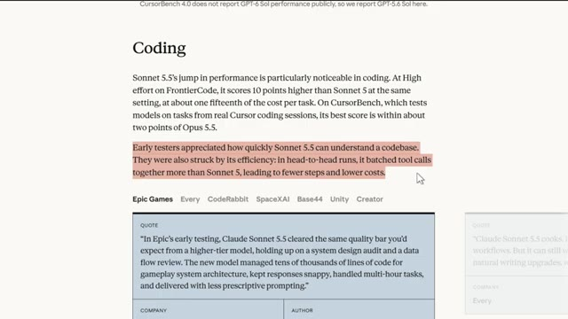
🔍 Agrandir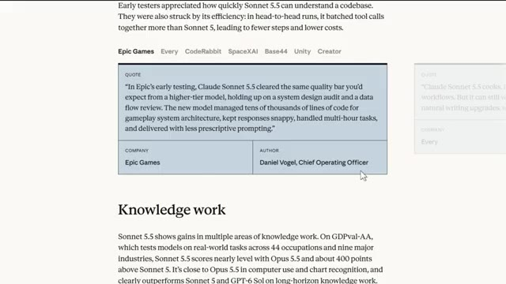
🔍 Agrandirgérer des dizaines de milliers de lignes de code pour l'architecture du jeu tout en gardant des réponses rapides. Slack l'a testé aussi, et sans changer aucun de leurs prompts, Sonnet 5.5 a surpassé Sonnet 5 sur presque toutes leurs évaluations hors ligne en utilisant environ 14 % de tokens de sortie en moins. Donc si vous utilisez l'IA pour vous aider à créer des bots de trading, à automatiser des scripts ou à nettoyer des feuilles de calcul pour le suivi de votre portefeuille, c'est directement pertinent, vous obtenez des résultats proches du niveau d'Opus sans le prix d'Opus. Maintenant, passons aux tarifs parce que c'est là que ça devient encore mieux, Sonnet 5.5 est tarifé
Interface & Outils : Page web de documentation ou de présentation officielle d'Anthropic (Claude AI).
Contenu textuel & Code : Témoignage de Curtis Allen (Principal Engineer chez Slack) et tableau comparatif chiffré des performances par benchmark (Terminal-Bench 4.0, FrontierCode, OSWorld 2.1).
Action / Démonstration : Présentation des résultats d'évaluations et des retours d'expérience d'entreprises partenaires sur Claude Sonnet 5.5.
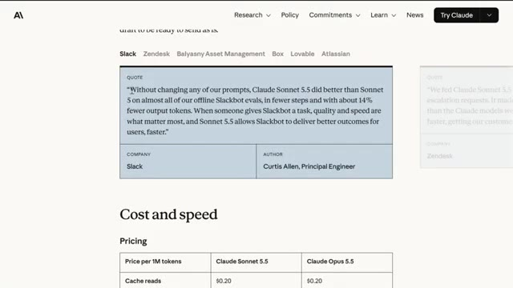
🔍 Agrandirexactement la même chose que Sonnet 5, deux dollars par million de jetons en entrée, dix dollars par million de jetons en sortie, et vingt centimes par million de jetons pour les lectures en cache. Comparez cela à Opus 5.5, qui coûte quatre dollars en entrée, vingt dollars en sortie. Donc, Sonnet 5.5 coûte littéralement moitié moins cher qu'Opus 5.5 sur le papier. Mais voici le hic, et je veux être honnête avec vous à ce sujet : l'efficacité des jetons n'est pas aussi simple qu'elle en a l'air.
Interface & Outils : Navigateur web affichant une page de documentation textuelle et tarifaire.
Contenu textuel & Code : Tableau tarifaire affichant les coûts pour Cache reads ($0.20), Cache writes ($2.50 pour Sonnet, $5 pour Opus), Input tokens ($2 pour Sonnet, $4 pour Opus) et Output tokens ($10 pour Sonnet, $20 pour Opus), ainsi qu'un texte explicatif sur la rapidité et l'efficacité.
Action / Démonstration : Présentation des tarifs comparatifs des différents modèles d'IA pour appuyer l'analyse économique du présentateur.
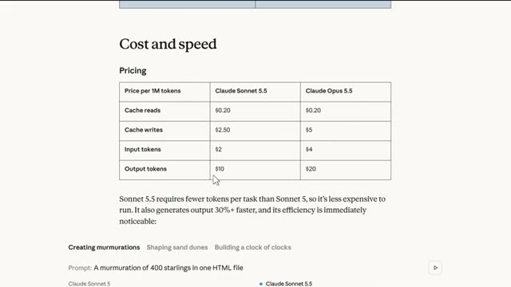
🔍 AgrandirArtificial Analysis a effectivement signalé que Sonnet 5.5 a l'utilisation de jetons la plus lourde qu'ils aient mesurée à l'effort maximum, utilisant 193 000 jetons de sortie par tâche d'indice d'intelligence, soit environ 60 % de plus qu'Opus 5.5 au maximum. Donc, pour égaler les performances du niveau d'Opus, Sonnet 5.5 doit parfois réfléchir beaucoup plus longtemps, ce qui grignote cet avantage de coût en production. C'est vraiment quelque chose à garder à l'esprit avant de supposer qu'il est toujours moins cher en utilisation réelle. Cela dit, à effort faible ou moyen, ce qui est le paramètre par défaut
Interface & Outils : Interface web X (Twitter) et graphique analytique d'Artificial Analysis.
Contenu textuel & Code : Graphique comparatif de l'utilisation des jetons par modèle d'IA (ex: Claude Sonnet 5.5, Opus 5.5, Qwen 3.8, etc.) avec des valeurs chiffrées.
Action / Démonstration : Présentation et analyse comparative de la consommation de jetons des modèles d'IA.
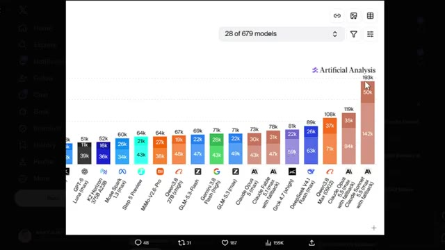
🔍 Agrandir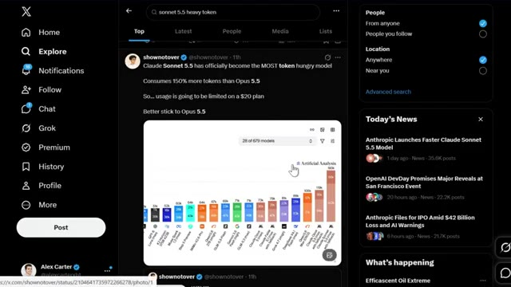
🔍 Agrandirle paramètre que la plupart des gens utilisent réellement, Sonnet 5.5 bat le meilleur score de Sonnet 5 pour environ un dixième du coût par tâche. Donc pour la plupart du travail de tous les jours, vous économisez vraiment de l'argent. Sur la vitesse brute, Sonnet 5.5 génère des résultats plus de 30 % plus rapidement que Sonnet 5, ce qui en fait le modèle Sonnet d'Anthropik le plus rapide à ce jour. Lors de tests comparatifs, pour créer des choses comme des commémorations, des animations, ou une horloge faite d'horloges dans un seul fichier HTML, Sonnet 5.5 finit toujours de manière visiblement plus rapide, tout en utilisant moins
Interface & Outils : Page web de documentation ou de présentation des benchmarks officiels d'Anthropic pour Claude Sonnet 5.5.
Contenu textuel & Code : Tableaux de benchmarks chiffrés (pourcentages de réussite et scores) et comparatif visuel en temps réel de génération de code HTML/JavaScript.
Action / Démonstration : Présentation des performances comparées et du fonctionnement des différents niveaux d'effort des modèles d'IA.
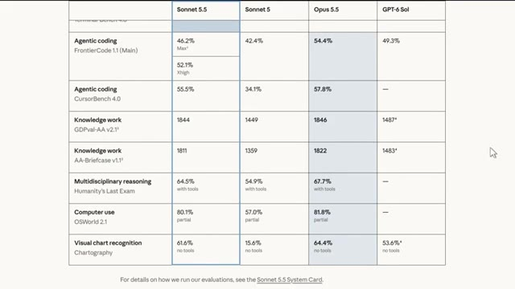
🔍 Agrandir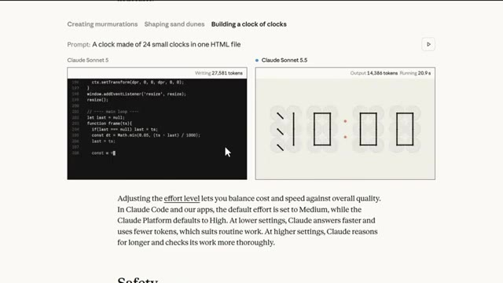
🔍 Agrandirde jetons que Sonnet 5. Donc oui, si vous êtes quelqu'un qui privilégie une itération rapide à de longues chaînes de raisonnement complexes, cela va ressembler à une vraie mise à niveau. Ensuite, nous avons le côté sécurité. Parce que les capacités cybernétiques de Sonnet 5.5 font un bond si important par rapport à Sonnet 5, Anthropik le déploie avec le même genre de mesures de protection utilisées sur Opus 5.5. Les tâches de cybersécurité à haut risque basculeront en fait automatiquement vers Sonnet 5. Les mesures de protection en biologie restent les mêmes qu'avant, et la plupart des recherches de routine, de l'éducation et du travail clinique ne sont pas affectées. C'est aussi le premier modèle Sonnet
Interface & Outils : Tableau de benchmarks et de métriques comparatives affiché à l'écran.
Contenu textuel & Code : Scores de performance pour des catégories telles que 'Agentic coding' (Terminal-Bench 4.0, FrontierCode 1.1, CursorBench 4.0), 'Knowledge work', 'Multidisciplinary reasoning', 'Computer use' et 'Visual chart recognition'. Les scores incluent 70.6% pour Sonnet 5.5 contre 10.3% pour Sonnet 5 en codage agentique.
Action / Démonstration : Présentation et analyse comparative des résultats de performance des modèles d'IA.
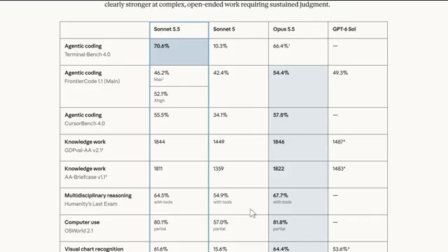
🔍 Agrandirpour être lancé avec des classifieurs de sécurité contre les attaques par distillation, ce qui représente une sacrée avancée dans le sérieux avec lequel ils traitent ce modèle. Quant à l'accès, Sonnet 5.5 est déjà en ligne sur toutes les plateformes, y compris AWS, Google Cloud et Microsoft Azure. Et vous pouvez commencer dès maintenant avec Claude Sonnet 5.5 sur la plateforme Claude. Voici maintenant la partie qui, selon moi, importe le plus.
Interface & Outils : Navigateur Web affichant la documentation d'Anthropic, la page d'annonce d'AWS et le blog Microsoft Foundry.
Contenu textuel & Code : Texte officiel décrivant les classifieurs de sécurité contre la distillation et l'intégration de Sonnet 5.5 sur AWS et Microsoft Foundry.
Action / Démonstration : Navigation à l'écran à travers les annonces de lancement et la documentation officielle de Sonnet 5.5 sur différentes plateformes Cloud.
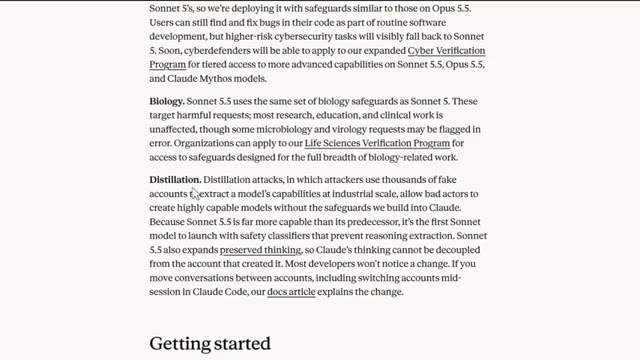
🔍 Agrandir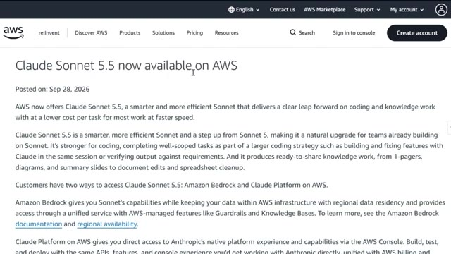
🔍 Agrandir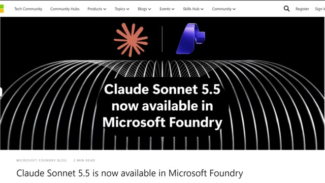
🔍 AgrandirCette sortie arrive juste avant la journée des développeurs d'OpenAI, et honnêtement, je ne pense pas que ce soit une coïncidence. Anthropic est sur une lancée ces derniers temps, et placer Sonnet 5.5 juste avant la grande annonce d'un concurrent est une démonstration de force assez claire. Sonnet 5.5 se positionne actuellement à la 56e place sur l'indice d'intelligence d'Artificial Analysis.
Interface & Outils : Navigateur web affichant le réseau social X (Twitter) et le site d'analyse de modèles d'IA Artificial Analysis.
Contenu textuel & Code : Annonce officielle de Claude Sonnet 5.5, comparaisons de performances, scores sur l'Intelligence Index, tarification et métriques d'utilisation des tokens. [DESC_IMAGE_1] Page d'annonce officielle de l'événement OpenAI DevDay 2026. [DESC_IMAGE_2] Tweet de l'entreprise Anthropic présentant la sortie de Claude Sonnet 5.5. [DESC_IMAGE_3] Rapport détaillé d'Artificial Analysis sur les capacités, l'efficacité et les coûts de Claude Sonnet 5.5.
Action / Démonstration : Explications face caméra et analyse conceptuelle des marchés.
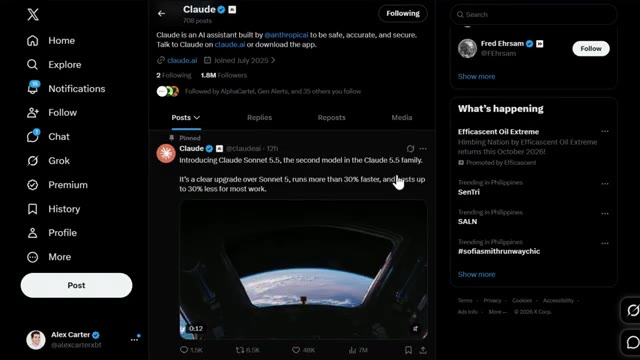
🔍 Agrandir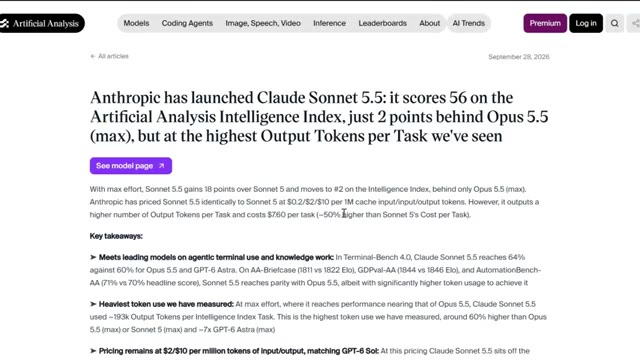
🔍 AgrandirC'est la deuxième place au classement général, juste derrière l'Opus 5.5 et trois points devant le Claude Sine 5.1. Il devance aussi le GPT-6 SOL sur presque tous les tests comparatifs présentés ici, pour un prix pratiquement identique. Donc, à l'heure actuelle, selon moi, Anthropic prend clairement la tête dans cette catégorie de poids spécifique.
Interface & Outils : Site web Artificial Analysis (tableaux de bord et graphiques de benchmarks de modèles d'IA).
Contenu textuel & Code : Scores de performance, indices d'intelligence, coûts par tâche (USD), et graphiques comparatifs entre modèles (Claude Sonnet 5.5, GPT-6 Astra, etc.).
Action / Démonstration : Présentation et analyse des performances comparatives des modèles d'IA sur différents benchmarks et axes de coût.
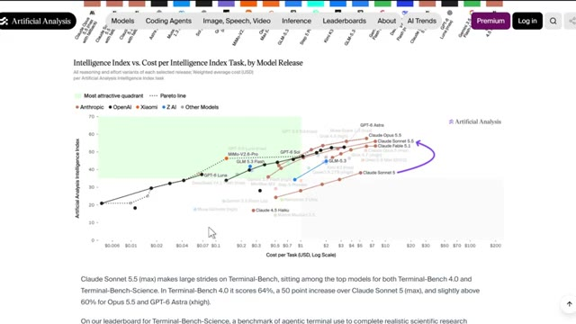
🔍 Agrandir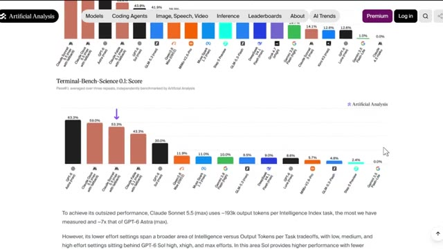
🔍 Agrandir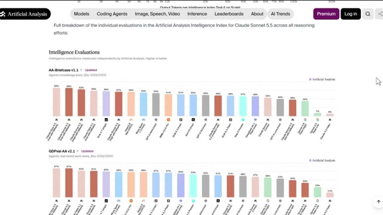
🔍 AgrandirTrès bien, et écoutez, pendant les prochaines années, deux types de traders existeront. Ceux qui utilisent l'IA et ceux qui font encore tout manuellement. Même marché, des résultats très différents. Voici comment vous mettre du bon côté. J'ai regroupé tout cela au sein de la communauté AI Trade Edge. Chaque prompt, chaque bot, chaque modèle, chaque guide étape par étape que j'utilise personnellement, le tout en un seul endroit.
Interface & Outils : TradingView, site web de formation Alex Carter Trading (interface sombre avec navigation par étapes).
Contenu textuel & Code : Graphique de prix BTCUSDT en bougies japonaises (vertes et rouges), volumes en bas de page, et liste des 78 outils permettant à Claude de contrôler TradingView (lecture de graphiques, données OHLCV, indicateurs techniques, changement de symboles et d'unités de temps).
Action / Démonstration : Visualisation du cours du Bitcoin sur un graphique en chandeliers et présentation des capacités d'intégration de l'IA sur TradingView.
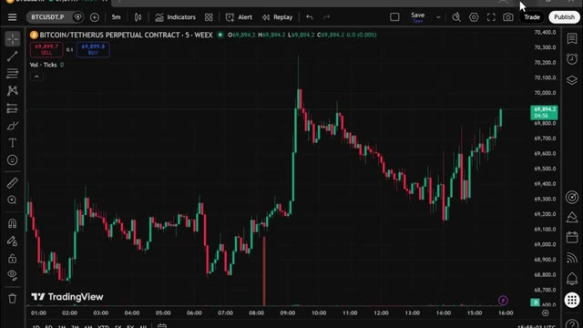
🔍 Agrandir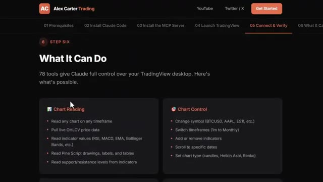
🔍 AgrandirEt tout ce que je construis à l'avenir est ajouté directement dans le groupe dès sa sortie. Nous testons également des stratégies provenant de tout l'internet, en les automatisant à l'aide de PineScript, en les exécutant en direct, et en partageant exactement ce qui fonctionne et ce qui ne fonctionne pas. Vous n'obtenez donc pas seulement des outils, vous obtenez une opération de recherche en direct à l'intérieur. Il y a aussi un cours complet de trading agentique de 2,5 heures, du débutant à l'expert, sans aucune base en programmation nécessaire. D'ici la fin, vous aurez votre propre système de trading par IA fonctionnant en direct, quelque chose que la plupart des traders particuliers ne savent même pas être possible en ce moment.
Interface & Outils : TradingView, interface web de cours et éditeur Pine Script.
Contenu textuel & Code : Graphique de prix BTCUSD, indicateur RSI-VWAP, signaux d'achat/vente colorés et métriques de PnL. [DESC_IMAGE_2] Analyse de la configuration technique et des signaux de trading sur l'actif Bitcoin.
Action / Démonstration : Explications face caméra et analyse conceptuelle des marchés.
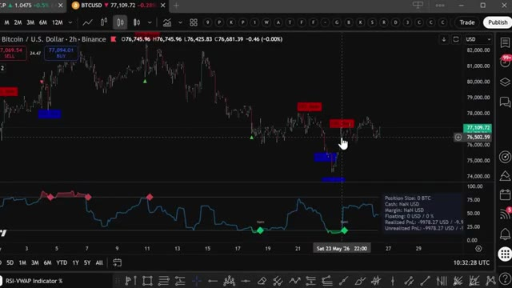
🔍 Agrandir79,99 par mois, un seul bon trade suffit à couvrir les frais, et les 100 premiers membres bloquent ce tarif définitivement, après quoi le prix augmentera. Le lien est dans la description. Vous ne pouvez vraiment pas vous permettre de rater ça. Alors, devriez-vous passer d'Opus 5.5 à Sonnet 5.5 ? Définitivement pour les tâches quotidiennes, les corrections de code rapides, le travail sur documents, et tout ce où la vitesse importe plus qu'un raisonnement ouvert et approfondi. Oui, absolument. Mais si vous faites du travail complexe à hauts risques qui nécessite un véritable jugement, Opus 5.5 reste
Interface & Outils : Navigateur web affichant des pages de documentation et de tarification (Whop et Anthropic).
Contenu textuel & Code : Tarifs d'abonnement (79,99 $/mois au lieu de 99,99 $), spécifications du modèle Claude Sonnet 5.5, score de 70,6 % sur Terminal-Bench 4.0 et comparaisons avec Opus 5.5.
Action / Démonstration : Présentation comparative des modèles d'IA et affichage de l'offre commerciale du formateur.
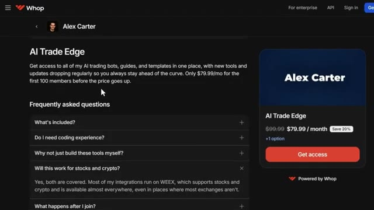
🔍 Agrandir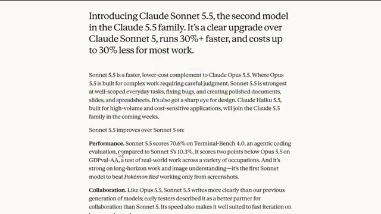
🔍 Agrandirclairement la meilleure option. Ce n'est pas vraiment un choix entre l'un ou l'autre. Il s'agit de savoir quand utiliser l'un ou l'autre. Un peu comme savoir quand utiliser le comptant par rapport aux contrats à terme, vous utilisez le bon outil pour la tâche spécifique qui se présente à vous. Quoi qu'il en soit, si vous souhaitez approfondir l'un des outils de Claude que j'ai conçus spécifiquement pour le trading, avec une vue complète des transactions, une visite guidée de Telegram et le suivi des baleines sur Hyperliquid, toutes ces vidéos s'affichent à l'écran en ce moment même. Allez les voir à votre rythme.
Interface & Outils : Page web d'annonce d'Anthropic (Claude), interface de discussion/messagerie et plateforme X (Twitter).
Contenu textuel & Code : Texte descriptif de Claude Sonnet 5.5, spécifications de performance (Terminal-Bench 4.0), et logs d'exécution de transactions de trading avec niveaux d'entrée, Stop Loss et Take Profit.
Action / Démonstration : Navigation sur la page de documentation de l'IA et visualisation de scripts de trading automatisés exécutant des ordres via une API.
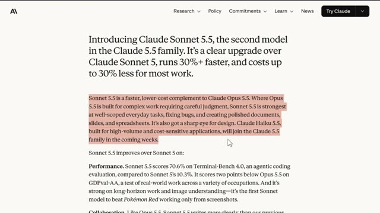
🔍 Agrandir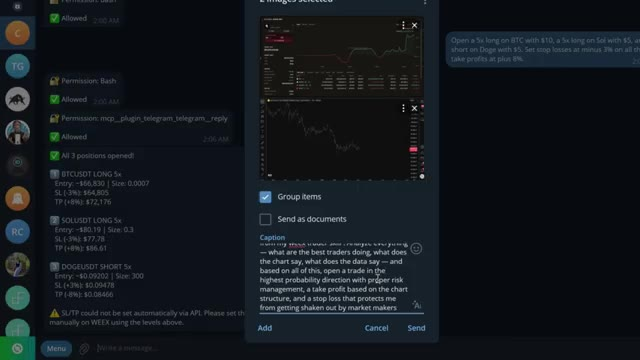
🔍 AgrandirEt si vous voulez le guide complet étape par étape sur la façon de construire votre propre système de trading agentique en utilisant Claude, cette vidéo apparaît également à l'écran. Allez la voir ensuite. Si vous avez trouvé cela utile, laissez un pouce bleu. Cela aide vraiment la chaîne. Abonnez-vous si ce n'est pas déjà fait et je vous vois dans la prochaine.
Interface & Outils : Aucune
Contenu textuel & Code : Aucun
Action / Démonstration : Aucune